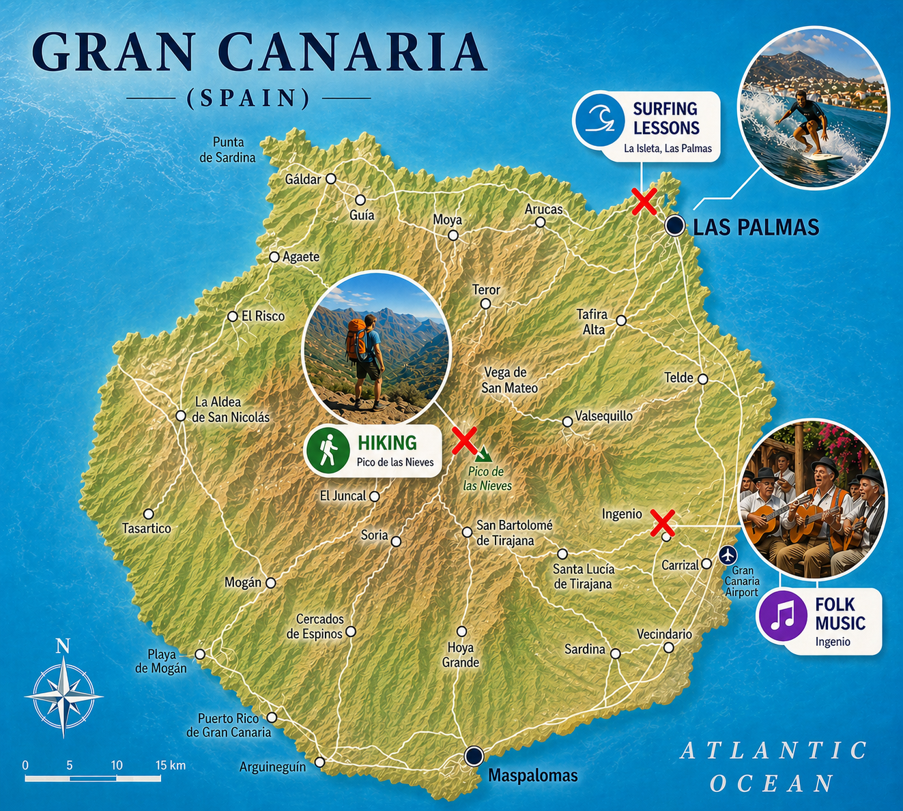

Activities
Gran Canaria offers a diverse mix of activities, combining stunning natural landscapes, exciting outdoor adventures, and a vibrant cultural scene for visitors of all ages.
Surfing
Oceanside Surf School in Las Palmas Surf classes in las Canteras, Canary Islands.
Book Now!!Hiking
Forget the beach crowd, our self-guided walking tour offer you the ultimate independent hiking experience!
Book Now!!Folk Music
Enjoy the vibrant sounds of authentic folk music with the highest technical and artistic quality.
Book Now!!